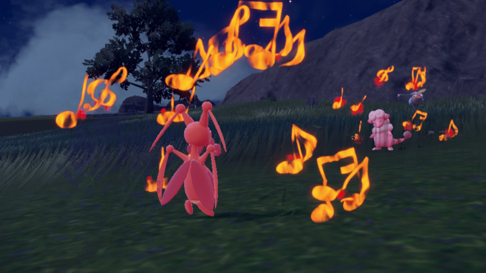
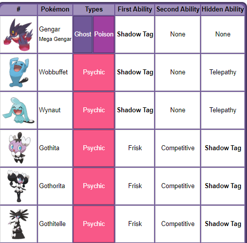

Pokémon
| |
Introduction | Common Information | Tiers in Competitive Pokémon |
Common Strategies | Reference |
|---|
| Strategy |
Gimmick |
|---|---|
| Strategies are thoughtout ways for your team to both synergize (compliment each other) as well as earn stat boosts to help win. Strats can be made through numberous considerations such as type match-ups, specialty in dealing with certain roles like stallers, etc. |
Gimmicks are niche ways you can deal heavy loads of damage or get high stat-boosts using a trick specific to an ability, move, etc. Usually gimmicks are hard to pull off as you take a large risk to get these large rewards. They can be easily countered, however if a gimmick is pulled off it can be significant in the game. |
| Wolfe Glick more commonly known as WolfeyVGC, is a famous professional Competitive Pokémon player as well as a renowned Youtuber won the Orlando Regionals in the Official Pokémon Championship Series. The team he used involved a lot of preplanning about the Pokémon he could use (as he played in Gen 9), typings, the roles each Pokémon would play, and his overall win condition. |
So what Pokémon did he use? |
|---|---|
Wolfey's team is at first glance extrememly unconventional for a doubles tournament (meaning 2 Pokémon on on the feild at once). However, there is some extrememly niche and tricky strategy with this team.
Wolfey's team is dubbed the "Perish Trap". This is because his entire team is centered around one important move: Perish Song.
|  |
Perish Song is a normal, non-damaging move. When used, all the Pokémon get a count down starting at 3. This represents the turns
at which the Pokémon takes to faint. Every turn the count decreases by 1 and once it gets to 0 the Pokémon faints. However, this can be easily dealt with
by simply switching out to another Pokémon.
|
|---|
|  |
Shadow Tag is a ability that forces the opponents to stay in the battle. This means they can not switch out unless a
move such a volt switch, a move that forces the user to switch, is used.
|
|---|
Both his support Pokémon and his main gimmicks are what makes his team so good. Every Pokémon synergizes with each other for any situation. Not only this, but he managed to popularize the use of Scream-Tail, a Pokémon thought to be extremely weak. It just goes to show that no matter what you use, if you have a good strategy anything can happen.
If you still dont know where to start, give some of these strategies a try. They're all fun and beginner friendly, make sure to use them in the right generation and when you feel you're realy try making your own teams.